01 Complete flatpack inventory — canonical families
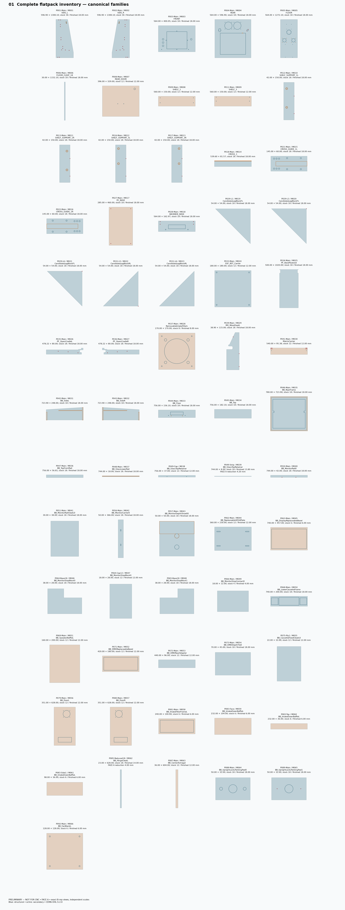
93 installed components → 130 pieces / 66 families. All 15 decomposition holds resolved. 71 one-face CNC routes; 59 routes include explicit manual finish. Actual material, coupon, hardware and structural/finish qualification still block full-sheet release.
CURRENT geometry and supplier values unchanged. Saved member unions differ by 0 mm³. No production nesting or G-code.

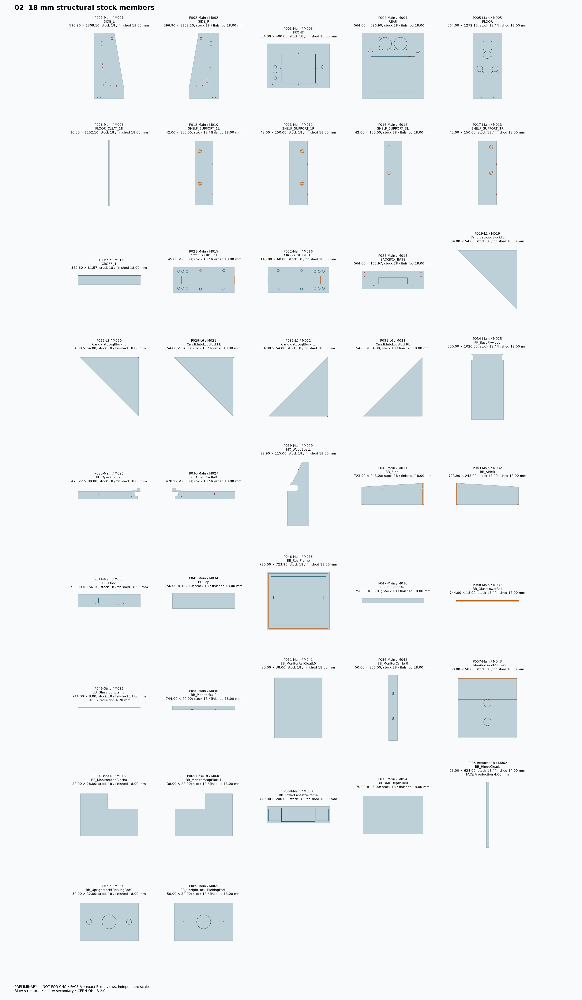
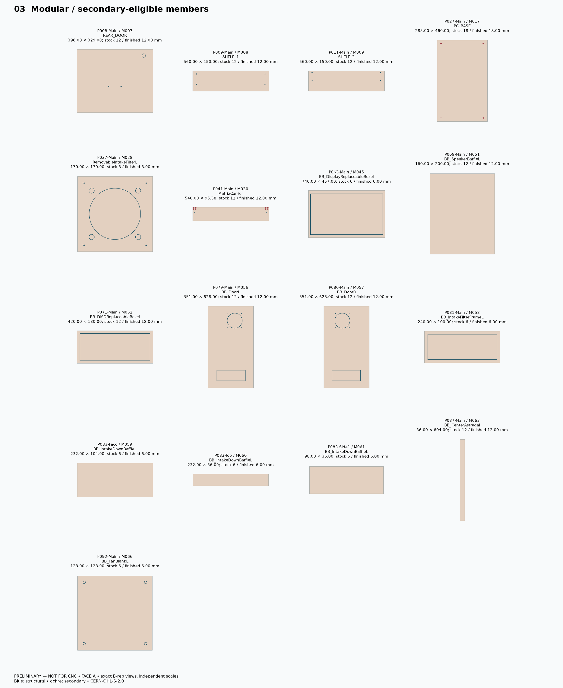
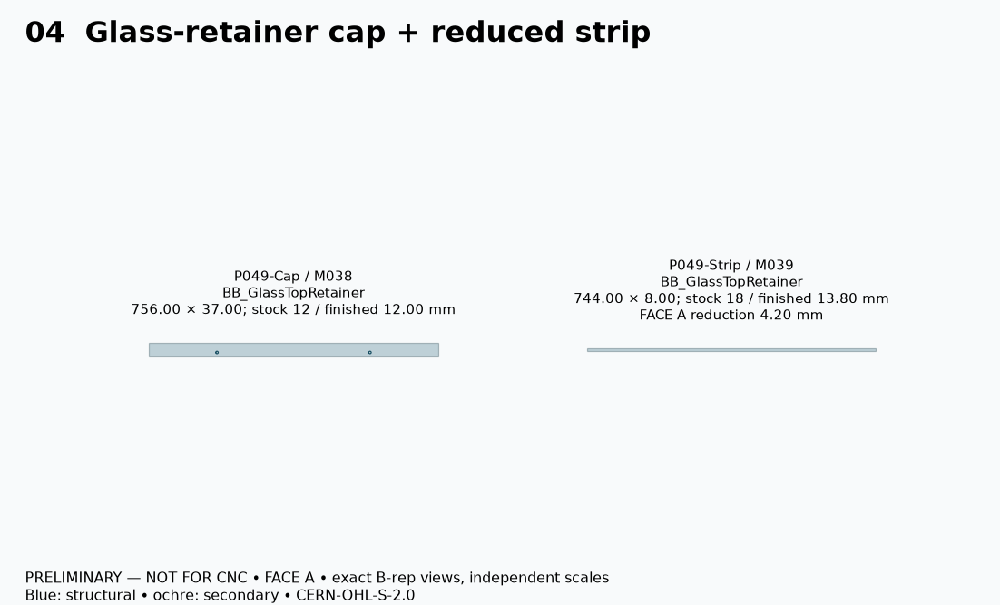
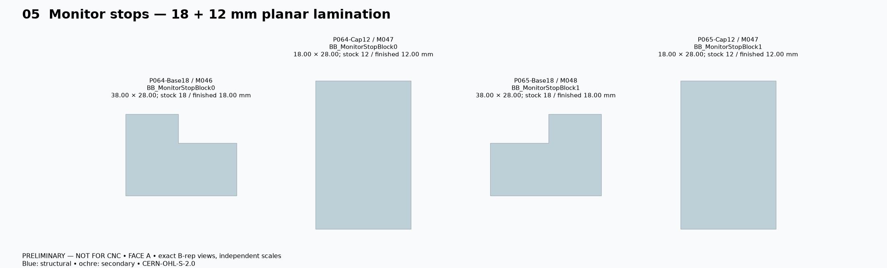
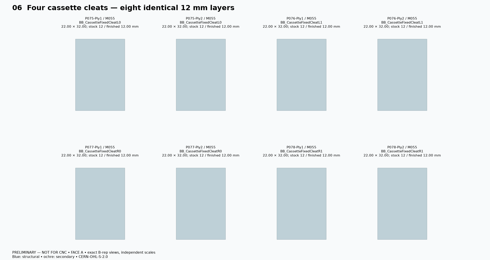
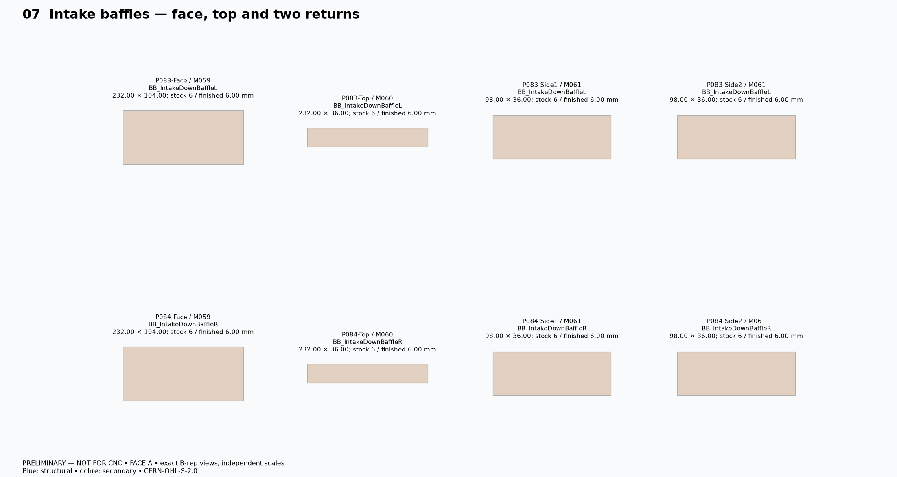
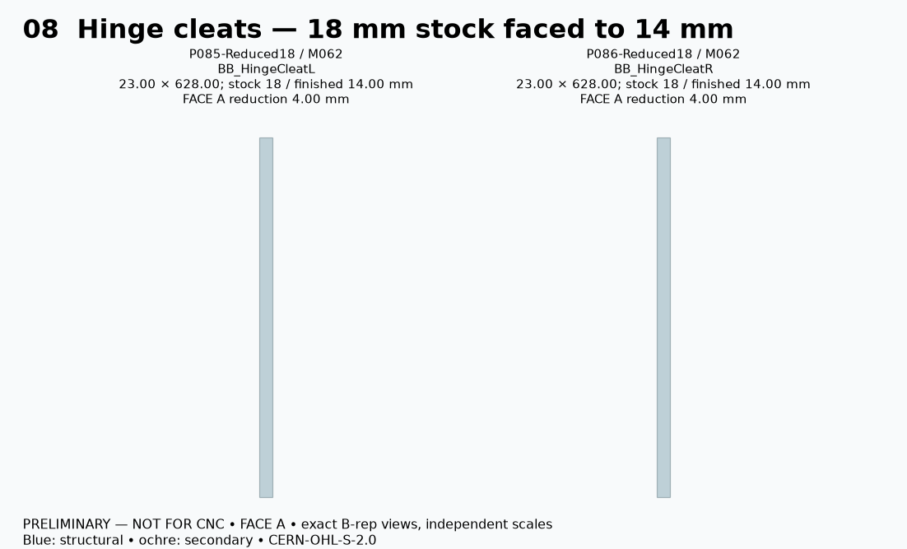
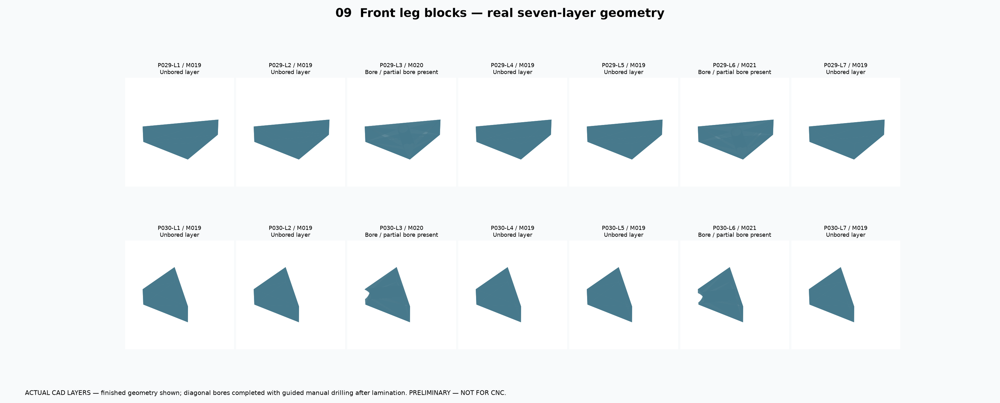
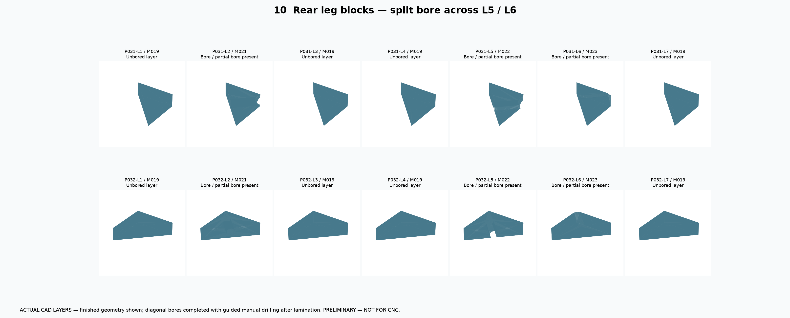
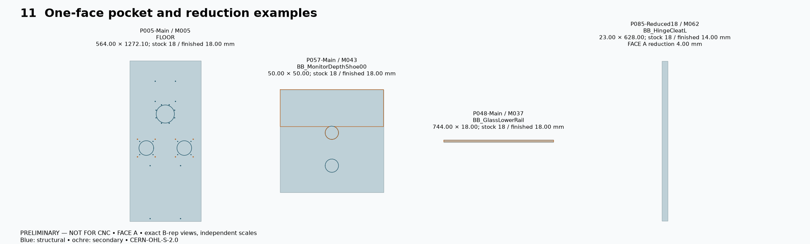
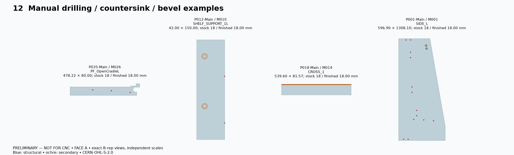
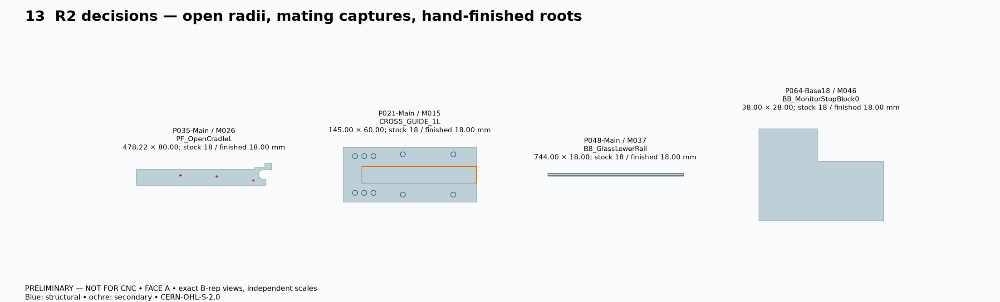
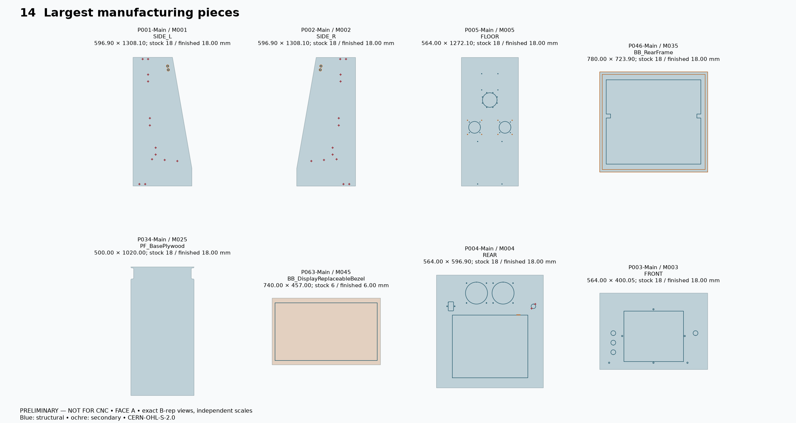
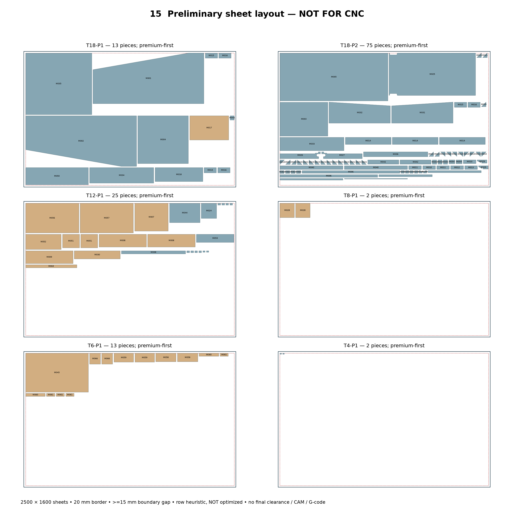
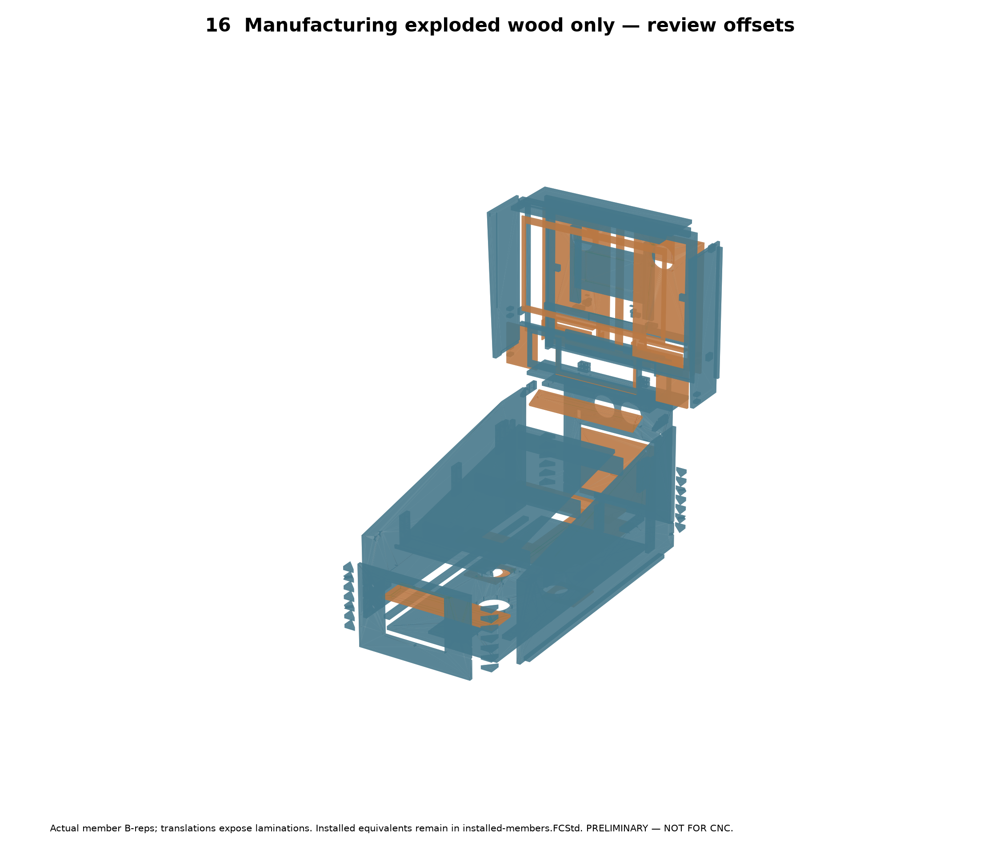